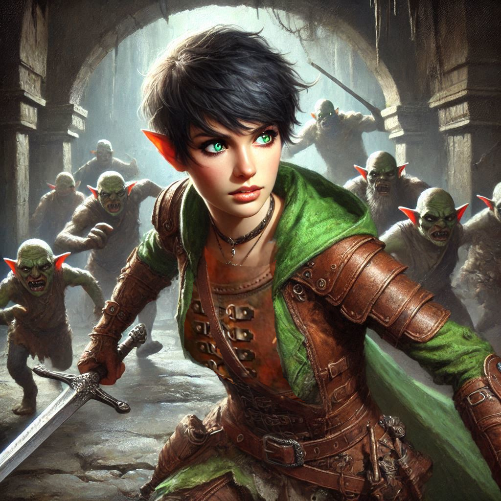
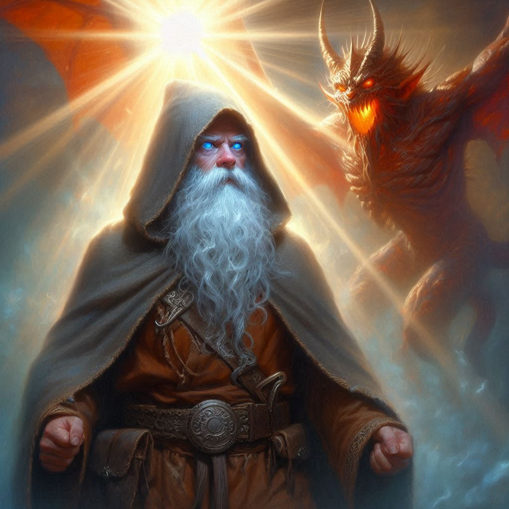

A Promise Remembered
You press forward, heart pounding as you survey the swirling chaos in the temple of Umbra'Thal. Dark elves encircle you, Baider, Elias, and Jorsh, swords flashing under dim torchlight. Every step forward is met with shadowy resistance, and your group is rapidly tiring. The elves press in, their movements lithe and lethal. Varis, clad in his dark armor, stands behind his minions, smirking, as if this entire encounter is no more than an amusement.
To your left, you are shocked to see Jorsh emerge through the portal from Hemlock Caverns. His eyes blaze as he surveys the mayhem in the dark temple. He is immediately swarmed by dark elves, but Jorsh fights with fierce determination, unleashing bursts of dark magic to scatter the elves. You try to watch him, but your attention is continuously diverted by another attacker. You dispatch another dark elf and look to find Jorsh again. When you finally find him in the fray, he’s tiring, sweat beading on his brow as his movements grow slower. Varis’s taunts only seem to feed his desperation.
But then you see Shamurel, the goblin who had helped you sneak into the city. He’s barely visible, hiding in the shadows with a look of terrified determination on his face. You remember your promise to him—a promise to help him and his enslaved kin if ever the chance came. You catch his eye and nod, a silent vow renewed in that brief connection.
“Elias, cover me!” you shout over the clash of swords and magic. He nods, confusion flaring briefly in his eyes, but his blades slice through the dark elves with precision, creating a path for you. Ducking through the fray, you reach Shamurel.
“We’re freeing them,” you tell him, breathless. “Now.”
Shamurel’s eyes widen, and without a word, he scurries down a hidden corridor, gesturing for you to follow. You run through winding halls, past cells filled with goblins bound in chains. One by one, you and Shamurel break open their shackles. The goblins, frightened but resolute, look to you and Shamurel with fierce loyalty as they’re freed.
With your newly liberated allies, you charge back into the main hall. The goblins rush forward in a wave, their sheer numbers overwhelming the dark elves and turning the tide of the battle. You watch as your freed allies swarm Varis’s soldiers, their cries of defiance echoing through the chamber.
Amid the chaos, you catch a glimpse of Jorsh, staggering as he faces off against Varis. Varis laughs, his cruel gaze flicking over Jorsh as if sizing him up for slaughter. Just as you’re about to rush forward, Varis hurls a shadowy bolt, knocking Jorsh to his knees. Without hesitation, you run to him, grabbing him by the arm and pulling him to his feet.
“Kira,” he whispers, voice rough with exhaustion and something else—something that feels like gratitude, maybe even regret. Together, you brace each other, and with a final burst of will, Jorsh raises his hands, summoning a fierce energy that engulfs Varis.
But Varis isn’t defeated yet. Laughing maniacally, he turns to the altar, where the portal to the nine hells shimmers ominously. Through the gateway, you see a nightmarish sight: the demon Yaldaboath, massive and monstrous, begins to emerge, his presence filling the temple with a dark, oppressive force. Every instinct tells you to run, but you know there’s no escape now—not while Yaldaboath is crossing the threshold.
Then, from the shadows, Onyx appears, his face lined but resolute. The dwarven elder looks back at you, Baider, Elias, and finally Jorsh, his gaze lingering with a fierce, protective love.
“Onyx! No!” you scream, understanding what he’s about to do. But he doesn’t pause. He steps into the portal, directly confronting Yaldaboath, his staff raised. Yaldaboath roars, and the chamber shakes as their powers collide.
As you and Jorsh shield yourselves from the clash of energies, you feel Elias and Baider at your side, their faces grim but determined. In a final, brilliant flash, Onyx’s form blazes with light, and a massive explosion fills the room. The demon’s shriek is the last thing you hear before the temple begins to crumble.
Elias’s arm encircles you, pulling you to your feet as rubble crashes down around you. Together, you race through the halls, avoiding falling debris. The cries of victory from Shamurel and the goblins echo faintly behind you, even as the weight of loss fills your heart.
As you and Elias escape through the shattered portal back to Hemlock Caverns, the reality sinks in: Onyx, Jorsh, and Baider are gone, sacrificed in the ultimate battle. But Yaldaboath has been defeated, and Varis’s dark reign is no more.
Emerging into the caverns, the cool air filling your lungs, you and Elias stand together, silent. The weight of your victory and your losses feels almost too heavy to bear. But you know that Belladonna is safe, and with time, maybe even you will find peace.